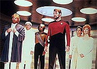
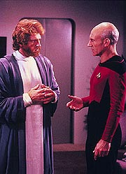
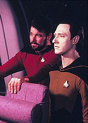
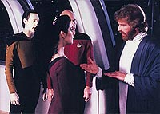

|
MANCHETE
DO EPISDIO
Episdio
de surdo-mudo bem que tenta,
mas no consegue falar nada que preste
Episdio
anterior | Prximo
episdio
Sinopse:
Data Estelar: 42477.2.
A Enterprise desviada inesperadamente para o sistema estelar
Ramatis, para transportar um famoso mediador, chamado Riva, para o
local de um intenso conflito planetrio, em Solais V. Para a
surpresa do grupo avanado, liderado pelo capito Picard, fica
logo claro que Riva surdo-mudo. Embora ele possa entender o que a
tripulao est dizendo ao ler seus lbios, seu nico modo de
se comunicar por meio do Coro, um grupo de trs pessoas que no
s possuem aspectos distintivos da personalidade de Riva, como tambm
podem ler os pensamentos do mediador telepaticamente e convert-los
em palavras.
 Em
rota para Solais V, Troi e Riva desenvolvem uma forte afeio mtua.
Deixados sozinhos juntos, Riva comunica seus sentimentos de amor por
Troi usando pensamentos e uma primitiva linguagem de sinais.
Chegando ao planeta devastado pela guerra, Riva, seu Coro e o grupo
avanado se preparam para encontrar os lderes da disputa secular.
Mas quando os combatentes se encontram para comear as conversaes
de paz, um soldado dissidente abre fogo, matando o Coro de Riva. O
grupo avanado e o mediador so rapidamente teleportados de volta
Enterprise, antes que mais danos fossem feitos.
 Surpreendido
pela perda de seu Coro, Riva se torna pouco comunicativo e perde
toda a confiana em si mesmo. Embora Data aprenda vrias formas de
linguagens de sinal e seja capaz de comunicar os pensamentos do
mediador, Riva se recusa a voltar ao planeta, onde seus amigos foram
mortos de forma to sem sentido. Por sorte, Troi capaz de
persuadir o mediador, para que ele transforme vantagem em
desvantagem.
De volta a Solais V, Riva dispensa Data como seu tradutor,
anunciando que ele planeja ensinar aos lderes em guerra a
linguagem de sinais, para quele eles possam se comunicar com ele e,
por consequncia, um com o outro.
Comentrios:
"Loud as
a Whisper" fala sobre como transformar desvantagens em
vantagens. Mal e porcamente. O episdio apresenta uma aventura at
certo ponto curiosa e envolvente, mas a verdade que ele no leva
a lugar nenhum. H vrias "mini-mensagens" espalhadas ao
longo do roteiro, algumas subliminares e bvias (como
"surdos-mudos podem superar suas dificuldades e tornarem-se
produtivos"), outras menos claras e aplicveis apenas em casos
especficos ("surdos-mudos so bons rbitros porque, de
certo modo, aprenderam a "ouvir" e a "falar" de
forma mais hbil e cuidadosa que os impulsivos seres falantes e
ouvintes).
Todas essas mini-mensagens, que giram justamente em torno da idia
de transformar uma bvia desvantagem (a deficincia fsica) em
uma clara vantagem (a capacidade de apaziguar povos em guerra), esto
apenas l, atiradas no texto. Todas elas teriam o potencial para
converter-se em um bom roteiro, fossem trabalhadas com maior
dramaticidade. Mas, do jeito que foi escrito, parece apenas um
amontoado de "morais da histria" sem muita
justificativa.
 A
idia final, de que o fato de os inimigos precisarem aprender a
linguagem de sinais de Riva poderia uni-los, obrigando-os a
trabalhar juntos e a superar suas diferenas, renderia um episdio
por si s. Mas a polpa (essa idia) est envolvida por um extrato
de coisas inteis.
S mesmo com um roteiro na mo algum poderia achar extremamente
gracioso, prtico ou sofisticado o mtodo de comunicao de
Riva, por meio de seu Coro. Para qualquer telespectador razovel,
aqui pareceria apenas algo pouco prtico, ineficiente e incmodo.
No consigo ver como olhar para uma pessoa e ouvir outra falando
possa ajudar em qualquer tipo de mediao.
Parece que o Coro de Riva, no formato que foi concebido, s existe
para ser morto e deixar o pobre mediador incomunicvel, obrigando-o
a testar suas prprias concepes (de que o segredo das
arbitragens transformar desvantagens em vantagens).
Desde o comeo, Riva arrogante, pomposo e presunoso, o que faz
da parte mais divertida do episdio o momento de desespero em que o
mediador se encontrou, assim que seu Coro foi morto. de dar
risada a boa atuao de Howie Seago, gesticulando freneticamente
(se que ele estava atuando).
 E,
se em um roteiro dramtico, o melhor momento foi aquele que o fez
rir, sinal de que o roteirista no foi bem-sucedido em sua
tarefa. "Loud as a Whisper" podia ter sido um bom
episdio, fosse ele rescrito de forma mais cuidadosa, mais dramtica
e menos previsvel.
Troi ganha tempo de tela aqui, mas no tempo "til" de
tela. Seu relacionamento com Riva risvel. Data e Picard foram
um pouco melhor utilizados, mas nada que fosse digno de nota.
Tecnicamente, o episdio apresenta a costumeira eficincia,
especialmente no efeito especial em que o Coro de Riva
desintegrado.
Citaes:
Riva - "The real
secret is turning disadvantage into advantage."
("O verdadeiro segredo transformar desvantagem em
vantagem.")
Trivia:
 Howie Seago, que interpreta Riva, realmente surdo. Foi ele que
props aos produtores um episdio da Nova Gerao baseado
em um ator convidado surdo. E acabou pegando o papel.
Howie Seago, que interpreta Riva, realmente surdo. Foi ele que
props aos produtores um episdio da Nova Gerao baseado
em um ator convidado surdo. E acabou pegando o papel.
Ficha
tcnica:
Escrito por Jacqueline Zambrano
Direo de Larry Shaw
Exibido em 09/01/1989
Produo: 032
Elenco:
Patrick Stewart como
Jean-Luc Picard
Jonathan Frakes como William Thomas Riker
Brent Spiner como Data
LeVar Burton como Geordi La Forge
Michael Dorn como Worf
Marina Sirtis como Deanna Troi
Wil Wheaton como Wesley Crusher
Elenco convidado:
Diana Muldaur como
Katherine "Kate" Pulaski
Howie Seago como Riva
Leo Damian como guerreiro/Adonis
Mamie Mosiman como mulher
Thomas Oglesby como Scholar
Colm Meaney como O'Brien
Richard Lavin como o lder Solari loiro
Chip Heller como o lder Solari moreno
John Garrett como tenente
Episdio
anterior | Prximo
episdio
|